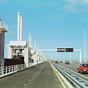

Compressie wordt gebruikt in digitale media om ervoor te zorgen dat files minder data opnemen. Dit wordt meestal gebruikt voor video, beeld en audio. Je hebt verschillende technieken om deze dingen te compressen, hier zijn een paar van de meest voorkomende.
Lossless compressie wordt gebruikt om zoveel mogelijk kwaliteit te behouden maar ook de file kleiner te maken. Dit wordt gedaan door patronen te vinden in pixel en die opslaan, zodat het minder ruimte inneemt, een beetje alsof je 4x4 doet in plaats van 4+4+4+4. Voor lossless audio compressie worden algoritmes gebruikt om te voorspellen wat er gaat gebeuren, en dan te kijken wat er gebeurt, en door dan een correctie te maken. Hierdoor heb je minder bits noding, waardoor de audio's data minder wordt.
Lossy compressie wordt gebruikt om files veel kleiner te maken, ookal gaat het ten koste van kwaliteit. Lossy conpressie focust vooral op kleurcompressie, want de ogen van een mens merken minder snel een verschil in kleur dan een verschil in licht. Hiervoor heb je een paar technieken: transform encoding chroma subsampling. Transform encoding werkt door de gemiddelde kleuren van een beeld te nemen en die vervangen met de originele kleuren. Het handinge aan transform encoding is dat je kan bepalen hoeveel kwaliteit je verliest. Chroma subsampling wordt vooral gebruikt voor video, omdat het veel data verwijdert voor weing observeerbaar kwaliteit verlies. Chroma subsampling werkt door de hoeveelheid kleur in een sample te verlagen Voor audio compressie heb je andere methodes, zoals quantization: de hoeveelheid waardes van ritme en toonhoogte te verminderen, en nauwelijks merkbare geluiden te verwijderen.
